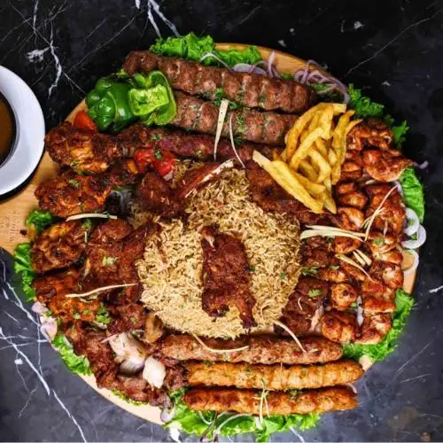
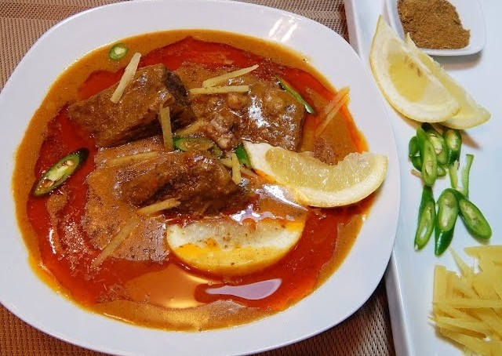
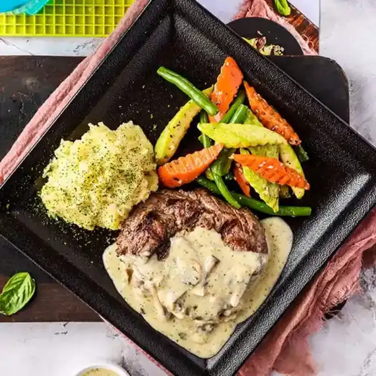
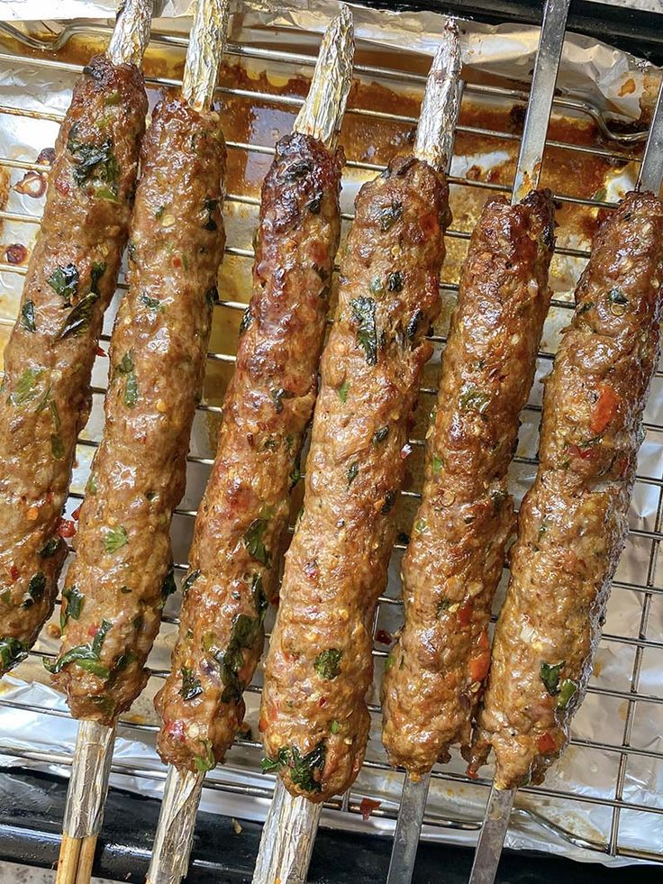
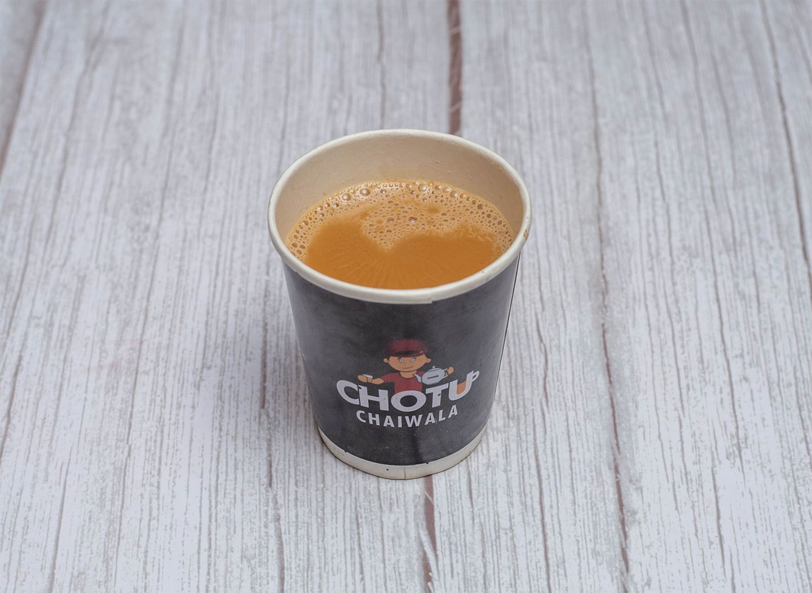
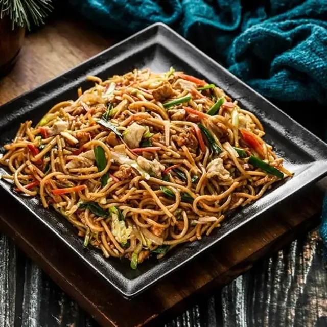
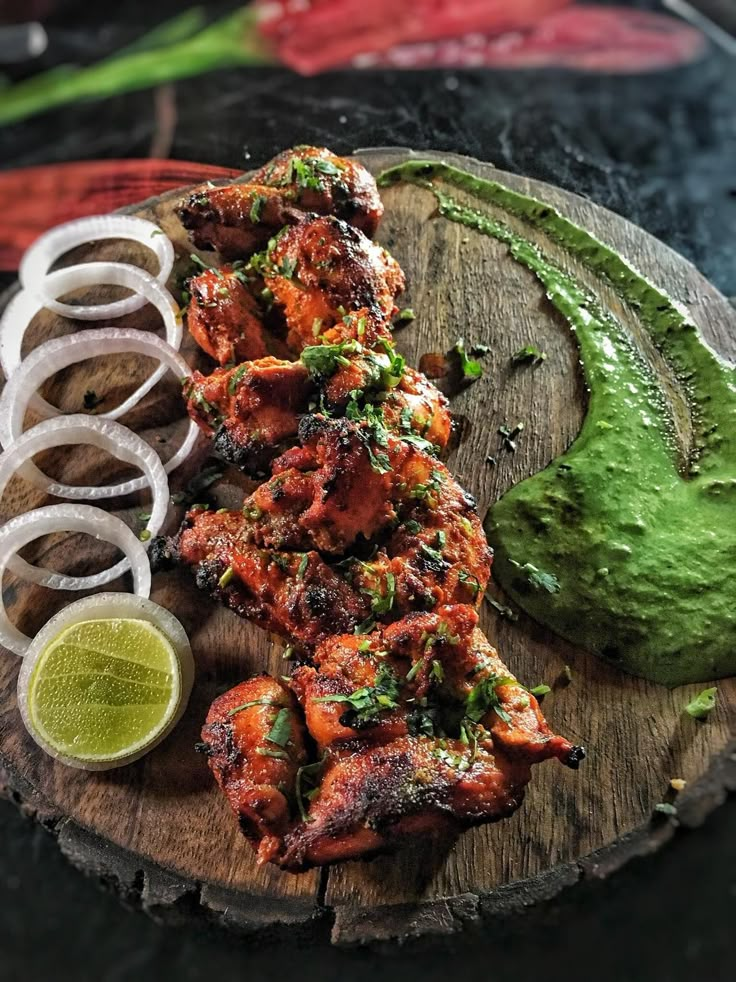

|
UD's Kitchen
|
"Where taste meets tradition" |
Honest Food Reviews
🍽 From the Streets of Karachi to Fine Dining
Welcome to the Reviews Section of Ubaid's Kitchen!
Here you will find completely honest reviews about food without any sponsors, without filters. Whether it's a
small roadside tea shop or a fancy restaurant, I share my experiences exactly as they are.
Every review will include:
- Taste Rating
- Price & Value for Money
- Ambience & Service
- Final Verdict
Al Habib - Karachi

Located in the heart of Karachi, Al Habib BBQ is famous for its smoky, spicy kebabs and juicy chicken tikka.
🍴 Taste: 9/10 - Perfect spice balance, juicy meat, and authentic charcoal aroma.
💰 Price: Affordable - Full BBQ platter for 4 people under Rs. 2500.
🏠 Ambience: Open-air setup, simple seating, perfect for family dinners.
💬 Final Verdict:
“One of the best BBQ experiences in Karachi — highly recommended for meat lovers!”
Burns Road Nihari - Karachi

If you love nihari, Burns Road is the ultimate destination. Rich, flavorful gravy and tender beef make it
unforgettable.
🍴 Taste: 10/10 - Deep, spicy, and aromatic — melts in your mouth.
💰 Price: Very reasonable - One serving under Rs. 500.
🏠 Ambience: Old-style roadside food feel, not fancy but full of nostalgia.
💬 Final Verdict:
“A must-try for nihari lovers — best enjoyed early morning with fresh naan.”
Student Biryani - Karachi

Student Biryani has been a Karachi classic for decades — a mix of tradition and modern service.
🍴 Taste: 8/10 - Flavorful, but sometimes a bit too oily for my liking.
💰 Price: Moderate - Rs. 400 per plate.
🏠 Ambience: Clean, air-conditioned indoor seating.
💬 Final Verdict:
“Great for quick biryani cravings, but not the absolute best in town.”
Delfrio - Karachi

Trendy café offering continental dishes, steaks, and creamy desserts.
🍴 Taste: 9/10 - Tender steaks with rich sauces and heavenly molten lava cake.
💰 Price: High - Rs. 2,000 per person average.
🏠 Ambience: Modern, classy, aur date nights ke liye best.
💬 Final Verdict:
“A place where taste meets style in every bite.”
Kababjees - Karachi

A famous highway restaurant offering a perfect combination of BBQ, handi, and fast food.
🍴 Taste: 8.5/10 - Juicy seekh kababs, creamy handi, and fresh naan.
💰 Price: Moderate - Rs. 1,500 per person average.
🏠 Ambience: Open-air, airy, and beautifully lit at night.
💬 Final Verdict:
“Long drive + Kababjees = Karachi's perfect weekend plan.”
Chotu Chaiwala - Karachi

A trendy chai spot offering doodh patti, parathas, and light snacks.
🍴 Taste: 9/10 - Rich, strong tea with crispy, buttery parathas.
💰 Price: Low - Rs. 200 per person average.
🏠 Ambience: Cozy, casual, and perfect for friends’ gatherings.
💬 Final Verdict:
“The ultimate late-night hangout for chai lovers.”
Ginsoy Extreme Chinese - Karachi

Modern Chinese restaurant serving fusion-style dishes with bold flavors.
🍴 Taste: 8.5/10 - Tangy, flavorful gravies with perfectly cooked noodles.
💰 Price: Moderate - Rs. 1,200 per person average.
🏠 Ambience: Bright, colorful, and vibrant.
💬 Final Verdict:
“Where Chinese meets Karachi spice lovers' taste buds.”
BBQ Tonight - Karachi

A well-known BBQ hub offering a variety of grilled meats and traditional dishes.
🍴 Taste: 9/10 - Smoky, tender kebabs and juicy chicken tikka.
💰 Price: High - Rs. 1,800 per person average.
🏠 Ambience: Spacious, lively, and perfect for family dinners.
💬 Final Verdict:
“A BBQ paradise that sets the standard in Karachi.”
Kolachi Restaurant - Karachi

Seaside dining with Pakistani and BBQ specialties, known for breathtaking sunset views.
🍴 Taste: 9/10 - Juicy BBQ with perfectly balanced spices.
💰 Price: High - Rs. 2,000 per person average.
🏠 Ambience: Romantic, open-air, and ideal for special occasions.
💬 Final Verdict:
“Food with a view that makes you fall in love with Karachi all over again.”
These are the honest reviews from UD's Kitchen for you all, we hope you found the right one for your cravings
satisfied!